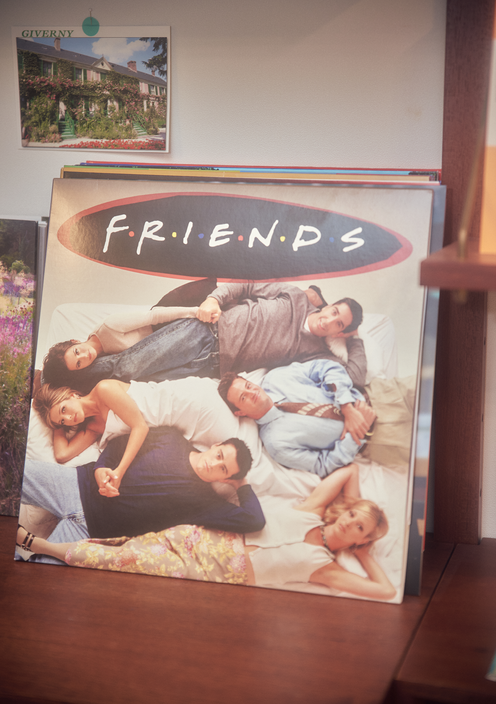
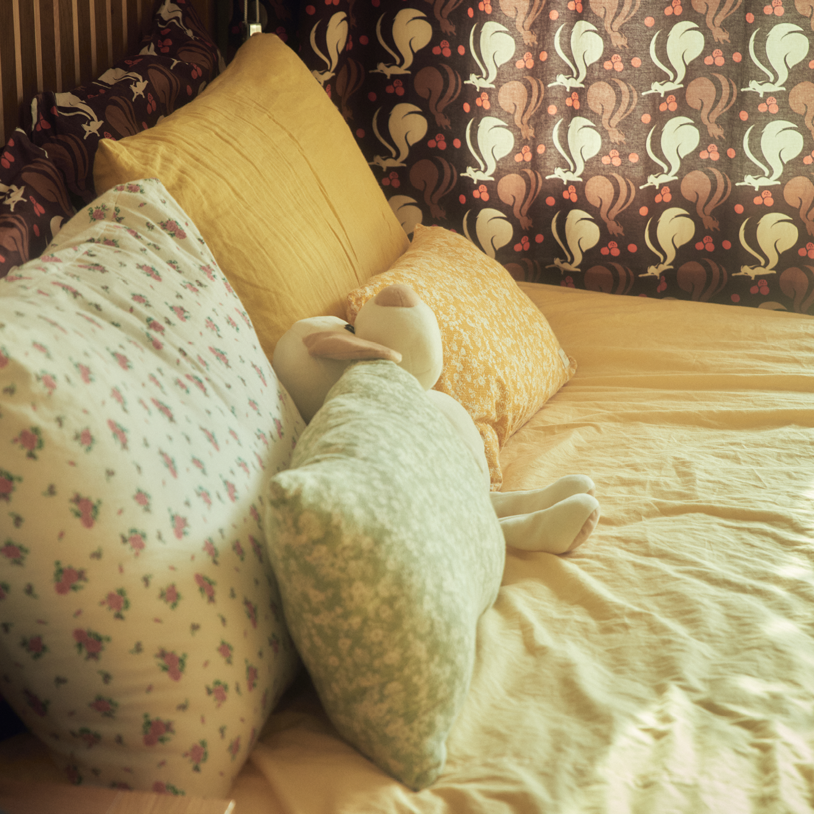
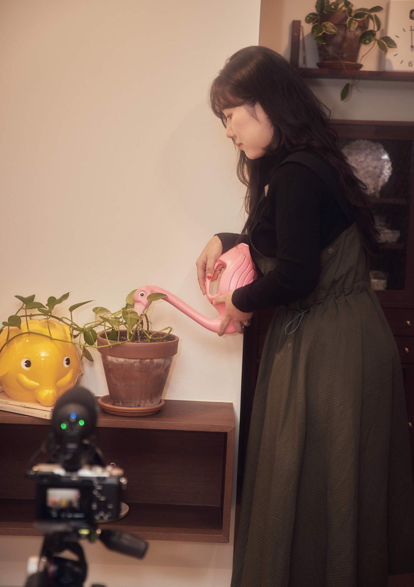
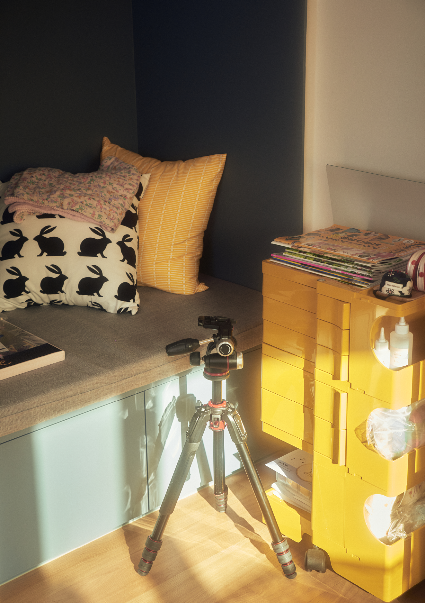

콘텐츠 크리에이터로 자신을 소개하는 다정은 유튜브 채널 ‘다정하게’에서 일상 브이로그를 제작한다. 개그맨이 되고 싶었던 만큼 자신을 솔직하게 보여주는 걸 좋아하는 그에게도 일상을 기록하고 다듬는 일은 쉽게 익숙해지지 않는다. 그럼에도 이 일을 쉽게 포기할 수 없게 만드는 건 무엇일까? 유튜브, 블로그, 인스타그램 등 빠르게 생겨나는 소셜미디어와 플랫폼은 다정에게 생계의 수단이자 취향을 차별점으로 만들 수 있는 곳이다. 그러다보니 빠르게 변화하는 트렌드를 따라잡기 위한 노력도 생활의 일부가 된다.
새로운 시작
유튜브는 어떻게 시작하게 되셨어요?
처음에는 남편이 기록용으로 시작했어요. 이 집으로 이사 오면서 어차피 장비가 있으니까 '나도 한 번 해보자.'해서 제가 올렸는데 조회 수나 유입이 많이 늘어났어요. 남편이 “이거는 네가 운영해야 되겠다.”고 해서 제가 하게 됐죠.
유튜브를 전업으로 하고 계시나요?
원래는 IT 회사를 다니다 잠깐 일 쉬고 싶어서 퇴사했어요. 다시 취업하려고 준비하는데 계속 영상 관련 일이 들어왔어요. 그러다 보니 시간이 없더라고요. 취직 생각 잊고 일을 한 지 1년 정도 됐어요. 지금은 영상 외주 받아서 제작하고 촬영하는 일을 하고 있어요. 유튜브가 기반이 되긴 했지만 딱히 스스로 유튜버라고 생각하지는 않아요. 그래서 콘텐츠 크리에이터라고 소개하고 있어요.
콘텐츠의 지속성
다정 님 유튜브 채널에 인테리어 관련 영상이 조회 수가 가장 높더라고요. 원래 인테리어에 관심이 많으셨어요? 이런 아이디어나 기획력은 어디서 왔나요?
제가 마릴린 먼로 영화나 일본 드라마, 영화를 좋아해서 거기서 영감을 받았어요. 영화 속 집들을 보고 그렇게 살아보고 싶다고 생각했어요. 사실 인테리어에 크게 관심이 있다기보다는 그냥 꿈꾸던 집을 만든 거죠. 이 집으로 이사 오면서 “<리틀 포레스트>, <카모메 식당>에 나오는 주방처럼 하고 거실은 원목 느낌으로 해주세요.”라고 업체에 의뢰했어요.
제가 결혼하면서 독립을 했거든요. 그런데 회사를 다니면서 집을 꾸미고 깨끗하게 유지하는 게 힘들더라고요. 청소도 맨날 할 수 없고. 오히려 이제 저한테 인테리어는 스트레스예요. 나중에 만약에 이사를 가면 이제 다 수납함에 넣어버리려고요. 최대한 편하게.
사실 콘텐츠를 만들려면 계속 이 공간의 변화를 주어야 되는 작업이잖아요.
네. 이 집에 뭔가를 해야 된다는 스트레스가 커서 사실은 어느 순간부터 제가 일상 브이로그를 많이 올렸어요. 경기도 1인 크리에이터 했을 때, 컨설턴트님이 부담감이 영상에 묻어 나오니까 그냥 한 번 가볍게 해보라고 해서 일주일 브이로그를 올렸는데 조회 수가 많이 나왔어요. 그래서 요즘 유튜브는 최대한 가볍게 접근하려고 하는 편이에요.

구독자와 생계 사이

구독자분들은 다정 님의 가구, 깔끔한 살림살이 같은 걸 좋아하시더라고요. 그런 댓글을 보면서 어떤 느낌이세요?
되게 감사한데 한편으로는 ‘이제 진짜 다음에 뭐 하지?’라는 고민이 있어요. 다른 유튜버 분들을 만나봐도 다 똑같은 이야기를 하더라고요. “유튜브 3년 하면서 베란다 정리만 여섯 번 올렸다.” 이런 이야기도 하고. 다 저처럼 처음에는 집 예쁘게 꾸미고 싶어서 찍었는데 나중에는 싫어진대요. 뭐든지 너무 좋아서 취미 생활로 하던 걸 일로 가져가게 되면 싫어진다고 하잖아요. 그런 것 같은 느낌?
그러면 주제를 바꿔볼 생각도 있으세요?
리빙 콘텐츠로 가끔 유료 광고가 들어오기도 하고 이게 또 포트폴리오가 되니까 계속하고 있어요. 요즘은 실험적으로 이것저것 해보고 있거든요. 유튜브는 실험해 보는 곳이라 생각하고 지금은 오히려 다른 일을 더 중요하게 생각하게 됐어요.
광고와 구독자가 좋아하는 내 일상 사이에서 어떻게 균형을 찾으세요?
딱 보자마자 이렇게 찍어야겠다 싶은 걸 해요. 그러면 광고주도 만족하는 영상이 나오는 것 같아요. 최근에 술 광고가 있었거든요. 제가 너무 좋아하는 제품 회사에서 마침 연락이 온 거예요. 그래서 바로 했는데 오프닝이 잘 만들어졌어요. 제가 봐도 잘했다 싶었는데 남편 친구들도 따로 연락이 왔어요. 끝까지 다 봤다고. 반면에 관심 없는 제품을 했을 땐 영상 이탈률도 높고 조회 수도 안나와서 ‘이거 망했네.’ 한 적도 있어요. 그래서 요즘은 딱 보자마자 느낌 오는 것, 내가 만들어 볼 수 있겠다 싶은 것만 해요.
직감과 자신감

정말 본인의 직감을 믿는 것이 이 일을 하는데 중요한 것 같다는 느낌이 드네요. 스스로에게 되게 자신감이 있어야 가능한 일인 것 같아요.
그런데 자신감은 늘 없어가지고. 사실 요즘 유튜브를 잘 못 올리는 것도 남편이 제 정신건강에 자주 올리지 않는 게 나을 것 같다고 해서. 한 달 안 올리게 된 것도 일하느라 그랬지만 그래도 마음이 불편하거든요. 안 올리면 안 올리는 대로 불안하고 올리면 또 그날 잠은 다 잔 거예요. 계속 들어가서 어디서 이탈이 있었는지 확인하고. 그렇게 하니까 그거대로 또 스트레스고 참 애매한 것 같아요. 그렇다고 그만두기는 싫거든요.
왜 자신감이 없다는 생각이 드시는 걸까요?
남의 눈을 되게 많이 의식해야 되잖아요. 저는 이번 영상이 되게 잘 될 거라고 생각하고 딱 업로드를 해요. 만들 때도 다른 때보다 더 열심히 편집했는데 조회 수가 잘 안 나오거나 공들여 편집한 부분에 대해 반응이 없을 때 자신감이 점점 떨어지고 심적으로 힘들어져요. 요전에 100만 유튜버와 이야기한 적이 있는데 그분은 더 심하더라고요.
생계의 문제
앞서 유튜브는 좀 더 편하게 대하려고 한다고 하셨잖아요. 구독자 수를 엄청 높이고 싶다는 목표가 있지는 않으신 거예요?
원래는 그랬는데 지금은 솔직히 말하자면 넷플릭스라든지 디즈니 플러스, 애플 TV 등 이런 게 있으면 요즘 유튜브 잘 안 보게 되더라고요. 근데 저만 그런 게 아니고 왠지 남들도 그럴 것 같은 거예요. 그래서 ‘새로운 구독자 유입은 조금 어려울 것 같다.’, ‘유튜브가 언제까지 이렇게 잘 되지는 않겠구나.’라는 생각이 계속 들어서 ‘이제 밥줄 빨리 찾아야겠다.’이런 생각을 해요.
확실히 이런 변화의 흐름이나 사람들의 니즈가 뭔지 빠르게 파악하시는 것 같아요.
왜냐하면 이게 당장 생계의 문제라 늘 변화의 흐름을 예민하게 봐야 돼요. 전에 틱톡 열심히 하다가 보니 이제 사람들이 안 하더라고요. 그래서 빨리 발 빼고. 괜히 잡고 늘어지는 건 시간 낭비니까요. 원래 블로그를 엄청 열심히 했는데 유튜브하면서 병행하니까 하나도 제대로 못하겠더라고요. 그래서 블로그는 쉬던 상태였어요. 그런데 요즘 젊은 친구들이 블로그로 많이 넘어간다는 걸 보고 다시 블로그 하려고 옛날 글부터 다시 정리하고 있어요.
친구들이 “나 요즘에 유튜브 잘 안 하고 넷플릭스 <오징어 게임> 봐.” 이런 식으로 이야기하면 그 속에서 파악하거나 동생을 통해서 동생 친구들, 회사 동료들에게 물어보기도 하고 계속 뉴스 보면서 확인해요.

재미있는 사람
얼굴이 드러나는 작업이잖아요. 예를 들어 저희는 다정 님의 유튜브를 보고 인터뷰를 하지만 저희 얼굴은 오늘 처음 보신 거죠. 다른 작업을 의뢰받을 때나 일상에서 겪게 되는 어려움들이 있는지 궁금했어요. 얼굴도 집도 노출되어 있는 거잖아요.
딱히 그런 건 없어요. 예전에 남편이랑 코엑스몰에 갔을 때 구독자가 알아보신 거예요. 그래서 신기했어요.
의식되지 않고 그냥 신기한 정도군요.
네. 원래 꿈이 방송 쪽 일을 하는 거였어요. 그래서 이렇게 얼굴이 드러나는데 부담을 느끼지 않아요. 그저 TV에 나오는 것도 좋아하고요. 그리고 아직까지 그렇게 유명인은 아니다 보니까요. 처음 유튜브 시작할 때도 제가 유명해지고 싶다고 생각해서 적극적으로 했어요.
그럼 일하면서 가장 재밌을 때는 언제인가요?
웃긴 게 저는 편집할 때가 제일 재밌어요. 예전에 개발은 나랑 안 맞는다고 맨날 이야기했는데 사실 개발할 때가 제일 재미있었거든요. 하기 싫은데 막상 하면 엔도르핀이 도는 거예요. 지금도 편집하기 싫어서 컴퓨터 앞에 앉기까지 되게 오래 걸려요. 그런데 막상 편집을 하면 내가 하고 싶은 대로 막 해보고 하니까 하면서 혼자 “재밌어. 재밌어 역시.” 하면서 갑자기 밤새고 그러거든요. 원래 개그맨을 하고 싶었고 스스로 웃기는 사람이라 생각해서 개그 욕심도 있는 편이에요. 영상에서 최대한 저를 똑같이 보여주고 안꾸미려고 노력해요. 그리고 촬영과 편집도 보는 사람이 지루하지 않게끔 노력하죠.